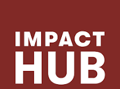
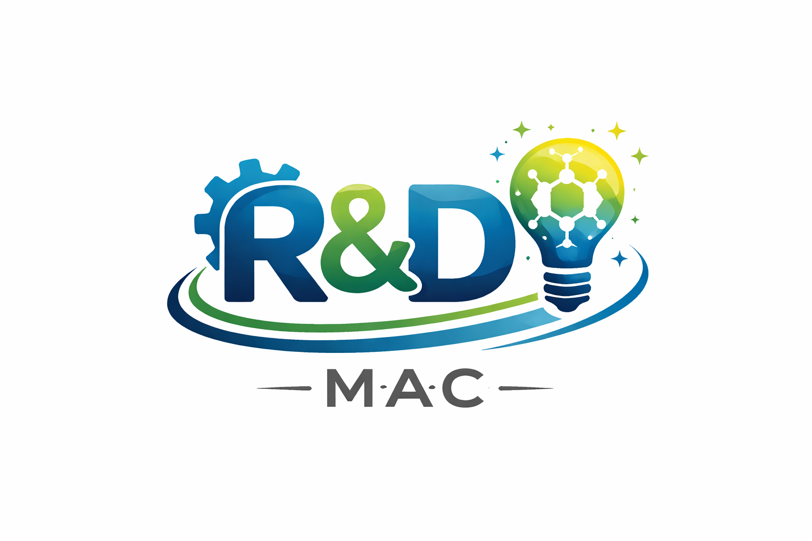

Citoyenneté
Encourager chaque citoyen à devenir un acteur responsable du développement de la France.
Agir aujourd'hui, par la citoyenneté, l'innovation et la science, pour construire la France de demain.
Le Mouvement Avenir Citoyen (MAC) est une association ivoirienne engagée dans la promotion de la citoyenneté, de l'innovation, de la recherche scientifique, de l'entrepreneuriat, du numérique et du développement durable. Notre ambition est de fédérer les citoyens autour de projets concrets ayant un impact positif sur les communautés.
Encourager chaque citoyen à devenir un acteur responsable du développement de la France.
Développer des idées nouvelles répondant aux défis économiques, sociaux et technologiques.
Faire progresser la connaissance par la simulation, l'IA et l'analyse de données au service du pays.
Promouvoir des initiatives respectueuses de l'environnement et créatrices de valeur durable.

Le Mouvement Avenir Citoyen (MAC) rassemble des citoyens partageant une même vision : contribuer activement au progrès économique, social, scientifique et environnemental de la France.
Convaincus que le développement passe par la participation de chacun, nous encourageons les initiatives locales, la recherche, l'innovation, la formation et l'engagement citoyen.
Découvrir notre histoireNous croyons en une société fondée sur l'innovation, la responsabilité citoyenne et la solidarité, où les compétences de chacun contribuent à bâtir un avenir plus prospère.
Encourager des solutions responsables respectueuses de l'environnement et des ressources naturelles.
Valoriser les nouvelles technologies, la recherche et la créativité au service du progrès.
Favoriser une implication active des citoyens dans la construction du développement national.
Chaque pôle du MAC porte une mission précise, avec ses propres objectifs et son équipe dédiée.
Sensibilisation civique, participation démocratique et vie associative locale.
Formations digitales, accompagnement des startups et culture technologique.
Incubation de projets, mentorat et insertion professionnelle des jeunes.
Reforestation, gestion des déchets et sensibilisation environnementale.
Bourses, mentorat scolaire et ateliers de renforcement de compétences.
Simulations scientifiques, intelligence artificielle et analyse de données.

En rejoignant l'Impact Hub, le Mouvement Avenir Citoyen (MAC) bénéficie d'un écosystème d'innovation, d'un réseau d'acteurs engagés et d'opportunités de collaboration pour renforcer ses actions citoyennes, développer des projets à fort impact social et accélérer ses initiatives en faveur du développement durable et de l'engagement des jeunes.

Un partenariat inédit pour modéliser l'impact climatique sur les rendements agricoles.
Les membres du MAC se sont réunis à Sartrouville pour valider les objectifs stratégiques 2026-2030.
Le pôle Communication & Partenariats élargit son réseau de soutien pour 2026.
Étudiant, professionnel, chercheur ou simple citoyen engagé : il y a une place pour vous au MAC.
Devenir membre